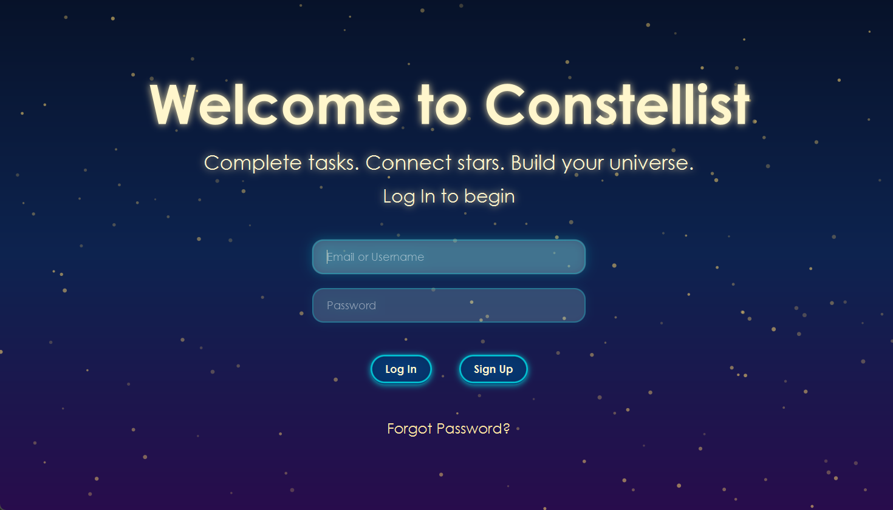
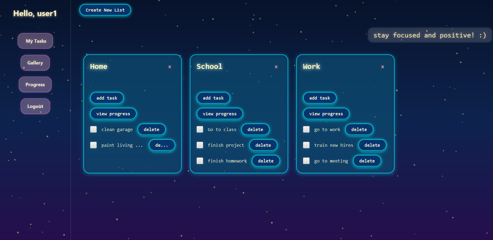
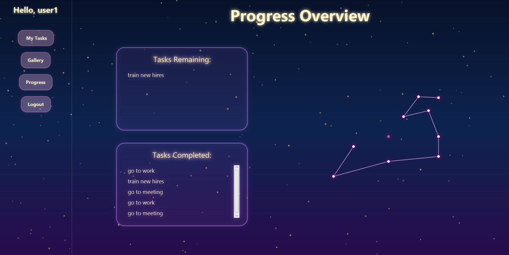
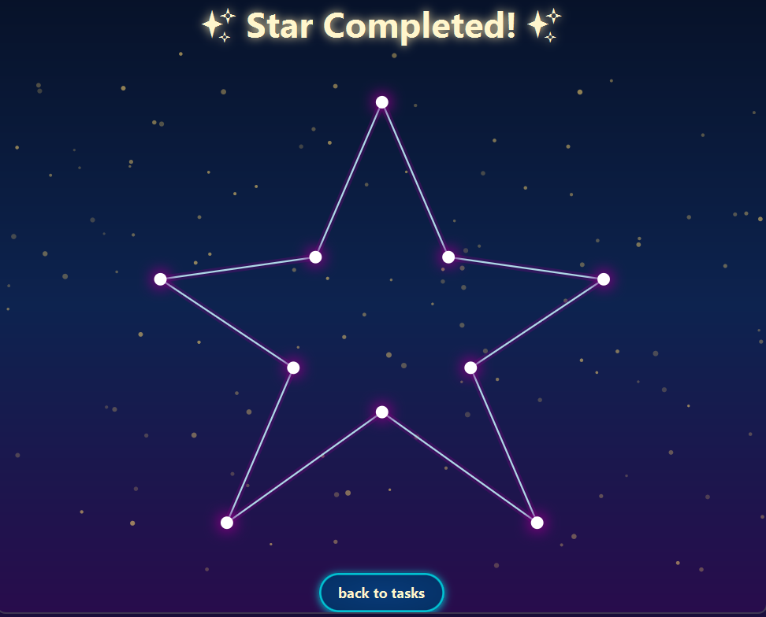
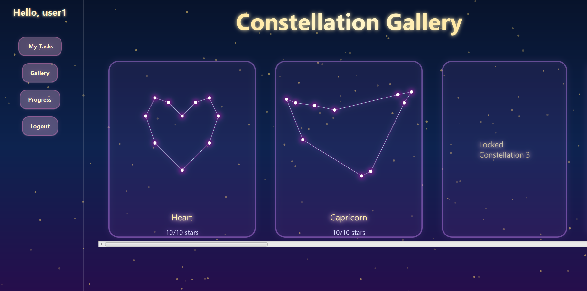

Last semester I teamed up with some of my classmates and we did a programming project together. The name of the project was called Constellist. Below is a screenshot of our welcome screen

The purpose of the project was to create a program that motivates people to complete tasks by rewarding them for each one they finish. Every completed task lights up a star in a constellation. Once a constellation is completed, the user can view it in a gallery to track their progress. Users can also see their in‑progress constellations as they work through their tasks.




This project helped me improve my teamwork, communication, and programming skills, and it was one of my favorite experiences in class.